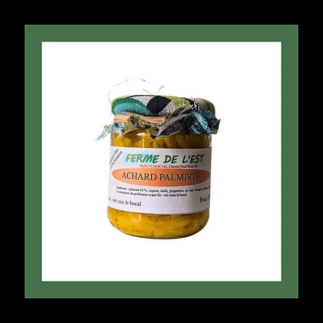
Achard palmiste
« Les achards de palmistes 😁 », la star d'une de ses publications.
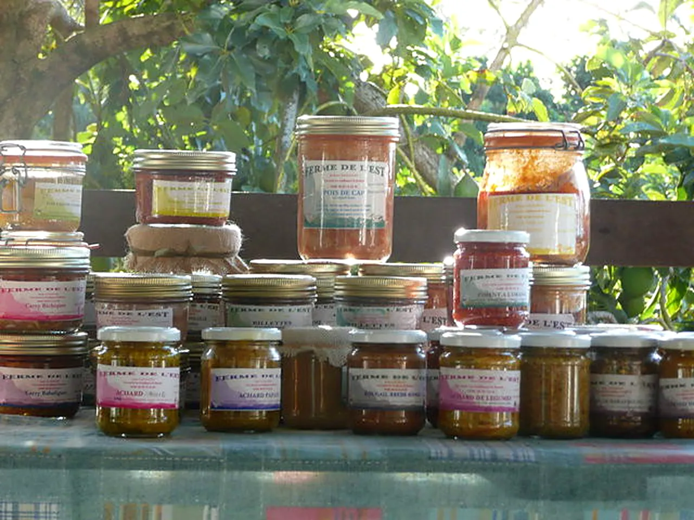
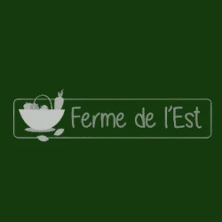
Saint-Benoît · Est de La Réunion
Spécialités culinaires de la Réunion
Achards, confitures, pâtes de piments et plats cuisinés : la Ferme de l'Est transforme avec passion les produits de l'Est de l'île, bocal après bocal.
57ter chemin Bassin Bleu, Sainte-Anne · Livraison de Saint-Denis à Sainte-Rose · Envoi Colissimo
L'histoire
Née à Saint-André, issue d'une famille d'artisans, Suzie a donné à sa ferme un nom qui rend hommage aux agriculteurs de l'Est de La Réunion, ceux qui lui confient les fruits, les légumes et les épices de ses recettes.
De ses cuisines sortent des confitures de fruits tropicaux, des achards traditionnels, des rougails, des piments et des plats créoles revisités avec sa touche à elle : ananas, papaye, mangue, goyavier ou letchi, relevés de gingembre, de piment ou de poivre sauvage.
« Une belle aventure que connaisse nos savoirs-faire »Ferme de l'Est, sur sa page Facebook
L'étagère salée
Fraîcheur, croquant et caractère : les accompagnements incontournables de la table créole, préparés à Saint-Benoît et coiffés de leur petit tissu.

« Les achards de palmistes 😁 », la star d'une de ses publications.
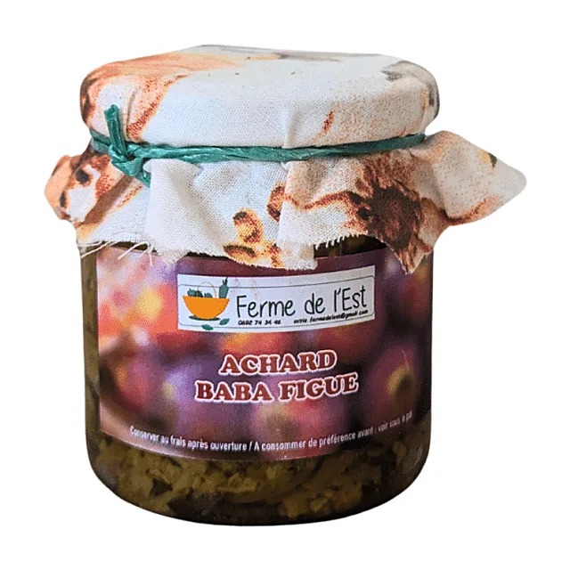
La fleur de bananier, en achard.
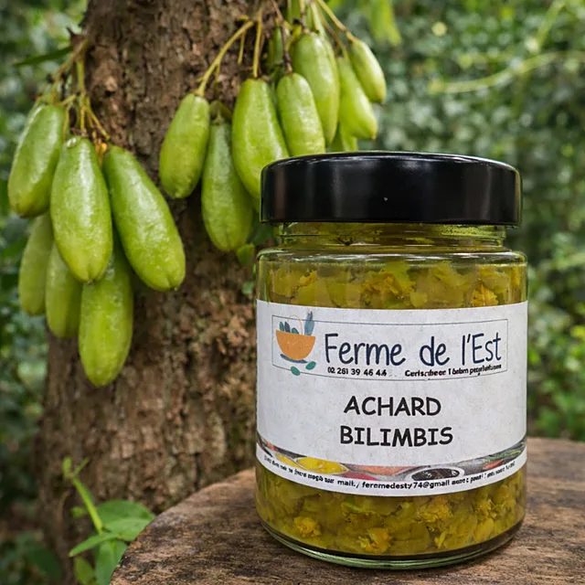
Le petit fruit acidulé du jardin créole.
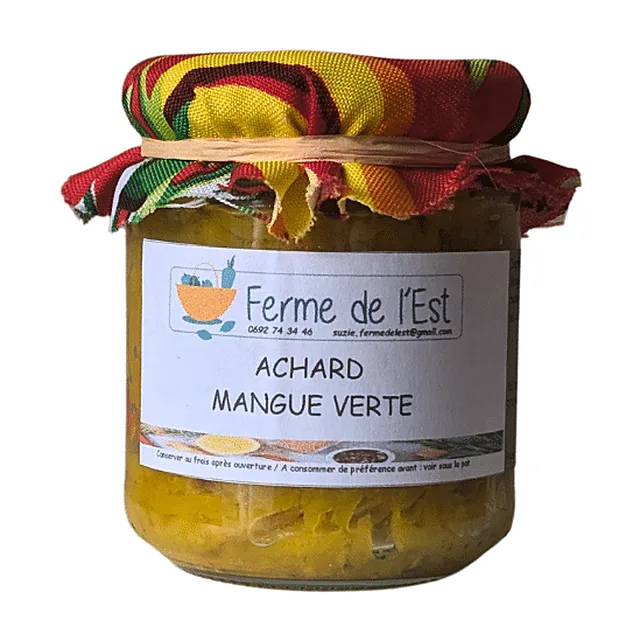
Coiffé de son madras.
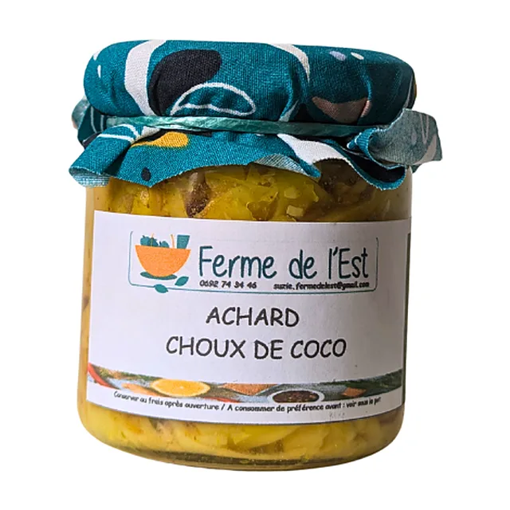
Une recette créole artisanale.
faites glisser →
Et aussi : achard de légumes, achard p'tit jacques, achard citron, achard chouchou, rougail dakatine, rougail bringelle à l'ancienne, piments à la pâte rouge à l'ananas, au gingembre ou au citron.
L'étagère sucrée
Des fruits de l'île aux parfums intenses, associés avec audace : piment, gingembre, vanille, poivre sauvage.
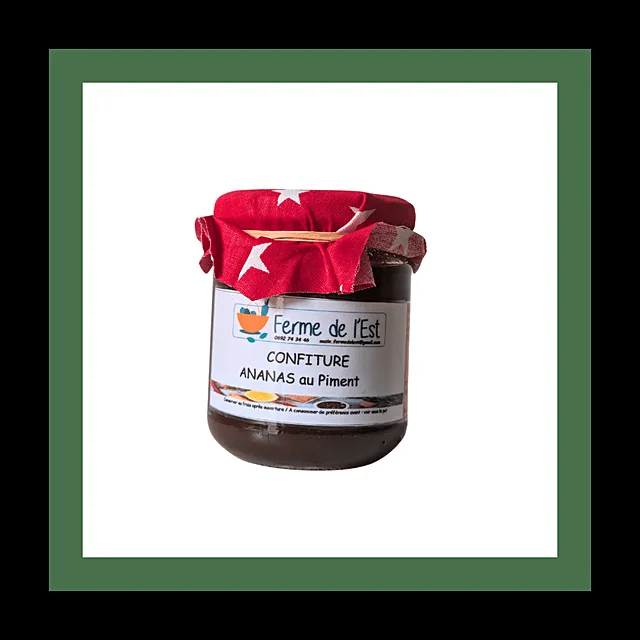
Douce et relevée à la fois.
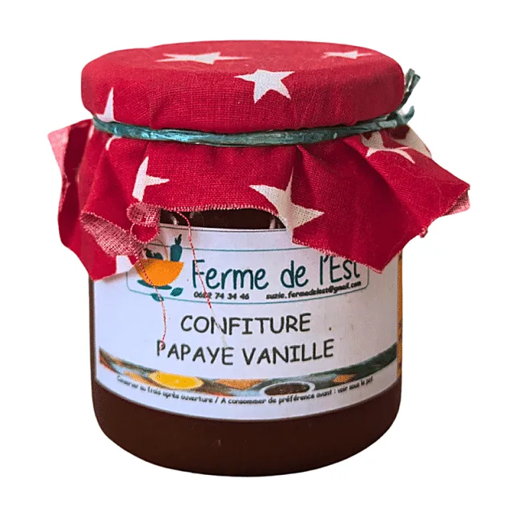
La papaye, parfumée à la vanille.
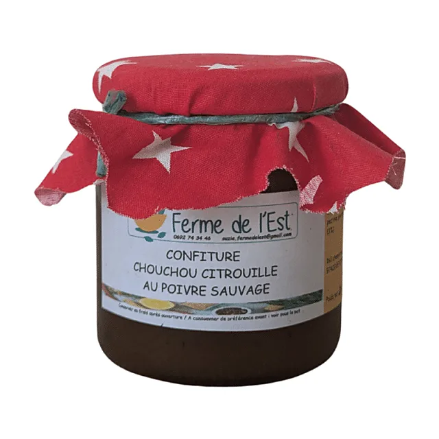
Une association signée Ferme de l'Est.
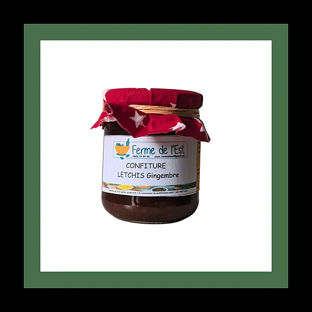
Le letchi, réveillé au gingembre.
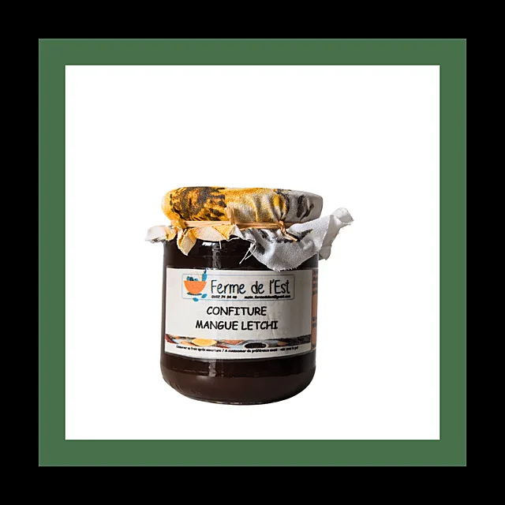
Deux fruits de l'été réunionnais.
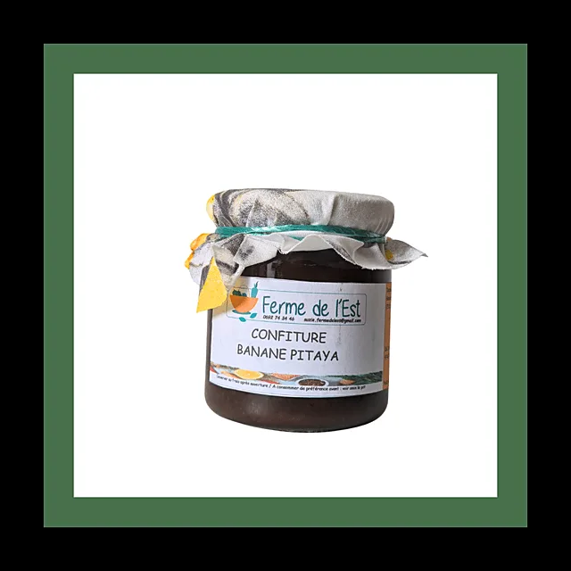
La banane et le fruit du dragon.
faites glisser →
Et encore : ananas Victoria, banane flambée, ananas tangor, ananas coco, ananas au poivre sauvage, banane goyavier, papaye ananas, papaye passion, des coulis et des crèmes.
Plats cuisinés & terrines
À côté des bocaux colorés, Suzie prépare des spécialités qui racontent l'île et ses métissages.
Savoureux et relevé, en bocal.
Le plat incontournable de l'île.
Une vraie découverte culinaire.
Le savoir-faire français marié aux arômes de l'île.
À tartiner, pour l'apéritif comme pour le pique-nique.
Pour donner du caractère à chaque assiette.
Sur la page de la Ferme
« La saison des agrumes bat son plein, seul ou avec de subtils mélanges d'autres fruits, pour un petit déjeuner ensoleillé 😊 »Publication Facebook de la Ferme de l'Est
« Une variété de belles curiosités gustatives pour réveiller vos papilles, venez nombreux découvrir mes produits phares de cette année »Publication Facebook de la Ferme de l'Est
« Les achards de palmistes 😁 »Publication Facebook de la Ferme de l'Est
Recevoir les bocaux
De Saint-Denis à Sainte-Rose : commandez, la Ferme vous livre.
Vos saveurs de l'Est voyagent partout où vous êtes.
Retrouvez les produits à l'Office de tourisme Côté Est de Sainte-Anne, et sur les marchés et événements de l'île.
Offrir pour Noël
Pour les gourmands de la famille, les collègues ou les proches en Métropole : composez avec Suzie une sélection de bocaux à offrir, du sucré au pimenté.
Composez votre sélection directement avec Suzie, selon les produits du moment.
Contact
Adresse · 57ter chemin Bassin Bleu, Sainte-Anne, 97437 Saint-Benoît
Téléphone · 0692 74 34 46
E-mail · suzie.fermedelest@gmail.com
Livraison · de Saint-Denis à Sainte-Rose, envoi Colissimo
Langues · français, créole, anglais